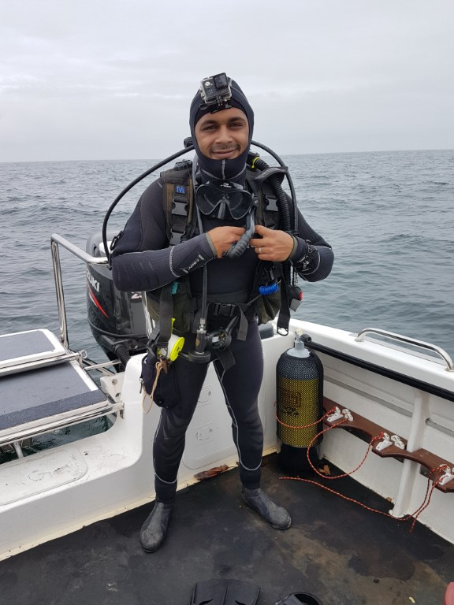

The Shallow Marine and Coastal Research Infrastructure (SMCRI) is one of 13 large Research Infrastructures developed by the Department of Science and Technology (DST) as part of the South African Research Infrastructure Roadmap (SARIR). The SMCRI was established in 2016 to develop an array of instruments and physical research platforms around the coast of South Africa and its sub-Antarctic Islands to collect long-term reliable data for scientific research to help decision makers formulate appropriate environmental policies to lessen the risk and vulnerability of the coastal zone to climate and global change. The SMCRI is tapping into South Africa’s geographical advantage by providing access to cutting edge research platforms and data at appropriate spatial and temporal scales in all the coastal biogeographic regions from all three oceans to stimulate innovative research and IP generation that is of global relevance. SMCRI is building on the suite of observatories, sentinel site and research platforms already established and maintained by the National Research Foundation’s (NRF) South African Environmental Observation Network (SAEON) and the South African Institute for Aquatic Biodiversity (SAIAB).